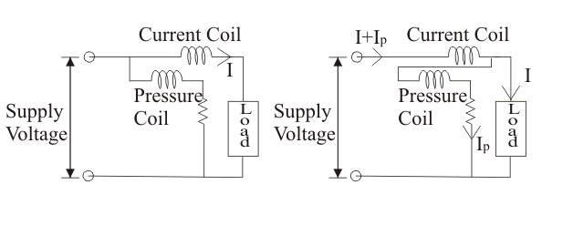

As the name suggests the low power factor meter are the instruments that measures lower values of power factor accurately. Before we study more about the low power factor meter, it is very essential to know why there is a requirement of low power factor meter though we use ordinary electrodynamometer to measure power factor?
Answer to this question is very simple as it gives inaccurate results.
Now there are two main reasons that would suggests us that we should not use ordinary wattmeter in measuring the low value of power factor.
(1) The value of deflecting torque is very low even though we fully excite the electric current and pressure coils.
(2) Errors due pressure coil inductance.
Above two reasons gives very inaccurate results thus we should not use normal or ordinary wattmeters in measuring the
low value of power factor. However by doing some modification or adding some new features we can use modified electrodynamic wattmeter or low power factor to measure the low power factor accurately. Here we are going to discuss, where we need to do modification. These are discussed one by one below:
(1) Modification in pressure coil:
The electrical resistance of the ordinary wattmeter's pressure coil is reduced to low value such that electric current in the pressure coil circuit is increased, thus it leads to. In this category two cases diagrams arises and these are shown below:

In the first category both the ends of the pressure coil is connected to supply side (i.e. electric current coil is in series with the load). The supply voltage is equal to the voltage across the pressure coil. Thus in this case we have power shown by the first wattmeter is equal to the power loss in the load plus power loss in the electric current coil. Mathematically, P1 = power consumed by load + I2R1.
In the second category, the electric current coil is not in series with the load and the voltage across the pressure coil is not equal to the applied voltage. The voltage across pressure coil is equal to the voltage across the load. In this power shown by the second wattmeter is equal to the power loss in the load plus the power loss in the pressure coil. Mathematically P2 = power consumed by load + I2R2.
From the above discussion we conclude that in both cases we have some amount of errors hence there is need to do some modification in above circuits to have minimum error. The modified circuit is shown below:
We have used here a special coil called compensating coil, it carries electric current equal to the sum of two currents i.e load current plus pressure coil current. The pressure coil is placed such that the field produced by the compensating coil is opposed by the field produced by pressure coil as shown in the above circuit diagram.
Thus the net field is due to the electric current I only . Hence by this way error caused by pressure coil can be neutralised.
(2) We require compensating coil in the circuit in order to make the low power factor meter. It is the second modification that we have discussed in detail above.
(3) Now the third point deals with the compensation of the inductance of pressure coil, which can be achieved by doing modification in above circuit.
Now let us derive an expression for the correction factor for pressure coil inductance. And from this correction factor we are going to derive an an expression for error due to inductance of pressure coil. If we consider the inductance of pressure coil we dont have voltage across pressure in phase with the applied voltage. Hence it that case it lag by an angle
where R is electrical resistance in series with pressure coil, rp is pressure coil resistance, here we also conclude that the electric current in the electric current coil is also lagging by some angle with the electric current in pressure coil. And this angle is given by C = A - b. At this time reading of the voltmeter is given by
Where Rp is (rp+R) and x is angle. If we ignore the effect of inductance of pressure i.e putting b = 0 we have expression for true power as
On taking ratio of equations (2) and (1) we have expression for correction factor as written below:
And from this correction factor error can be calculated as
Error = (1 - (correction factor))*(actual reading of the voltmeter). On substituting the value of correction factor and taking suitable approximation we have expression for error as VIsin(A)*tan(b).
Now we know that the error caused by pressure coil inductance is given by the expression e=VIsin(A) tan(b), if power factor is low (i.e in our case the value of φ is large hence we have large error). Thus in order to avoid this situation we have connect the variable series resistance with a capacitor as shown in the above figure. This final modified circuit so obtained is called low power factor meter. A modern low power factor meter is designed such that it gives high accuracy while measuring power factors even lower than 0.1.
 by
by